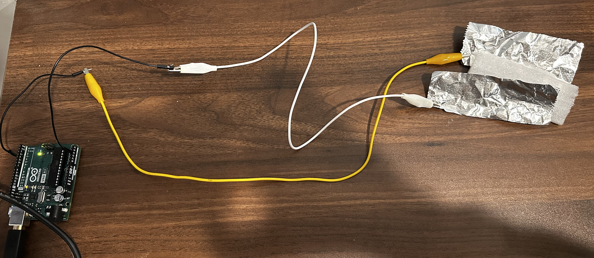
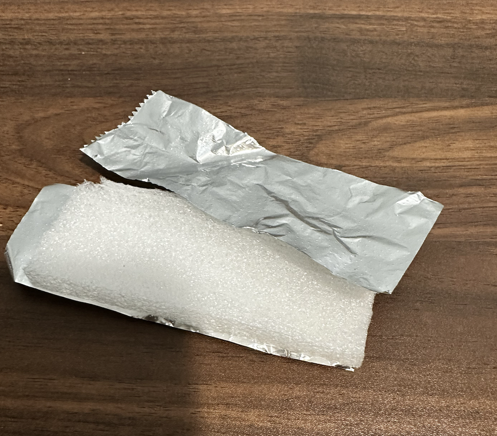
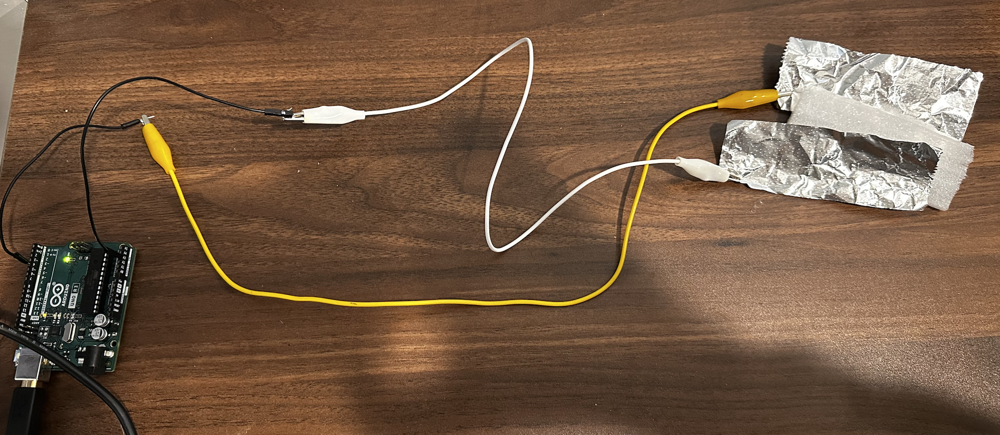
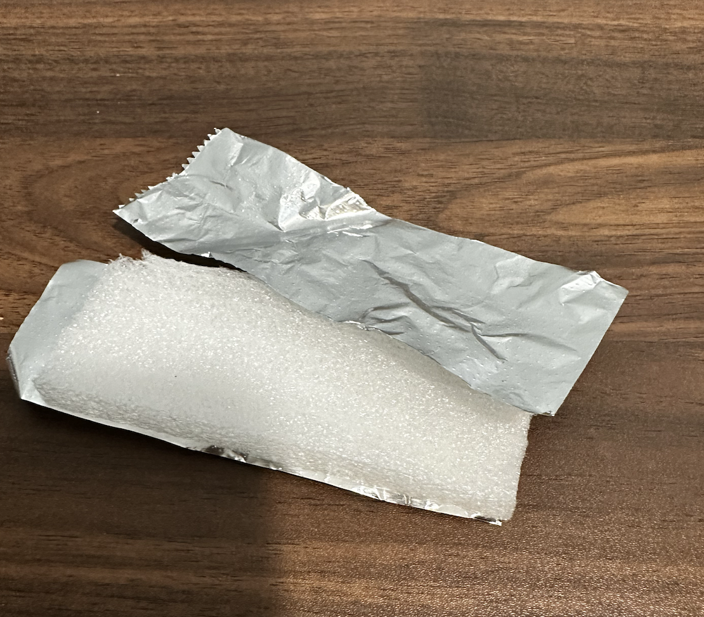
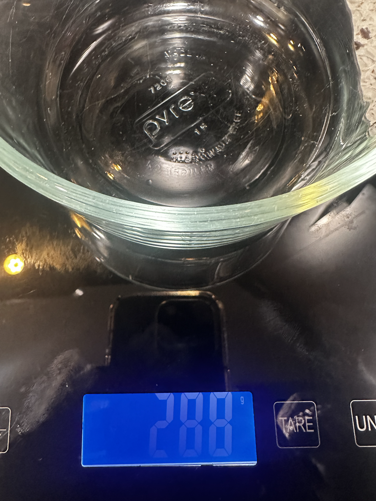
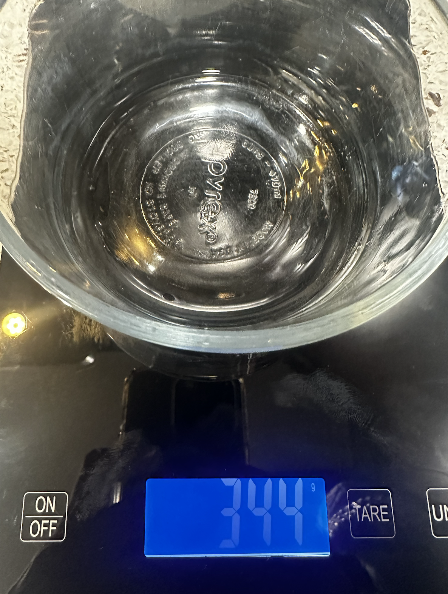
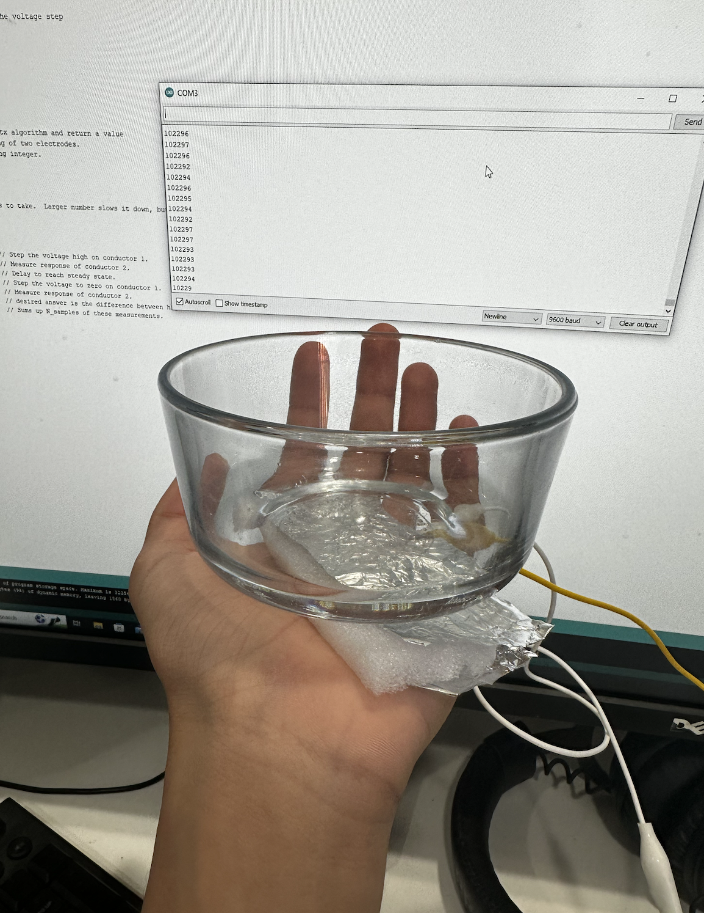
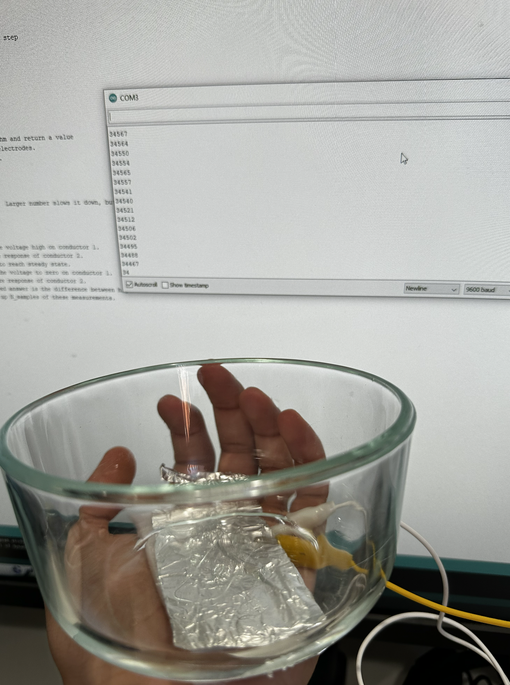
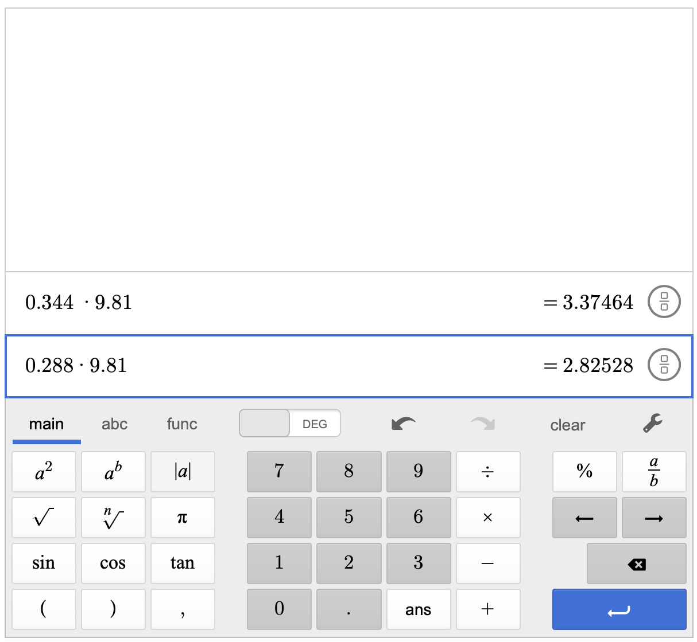
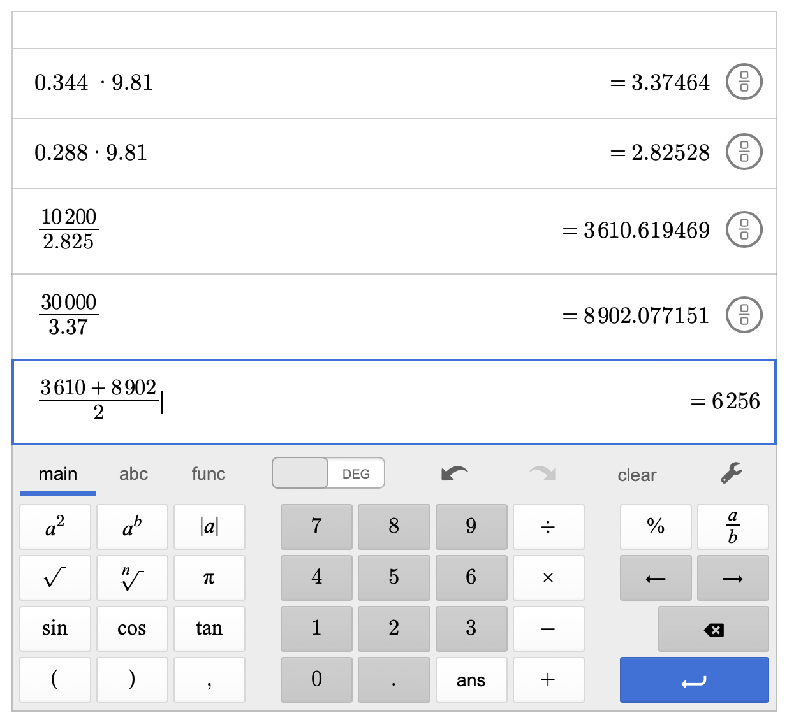

DIY Sensor
Overview:
For my DIY Sensor, I used Aluminum Foil, foam, and an Arduino to make a force sensor. The values that the base code reads at first are capacitive values but later I used very simple physics to convert those into newtons.
Procedure:
I first started with the wiring of the sensor. I hooked two ends of alligator clips to two ends of aluminum foil. Next I connected one alligator clip to A3 and the other aligator clip to pin 4.
 



Next I plugged the Arduino in and uploaded the code below.
long result; //variable for the result of the tx_rx measurement.
int analog_pin = A3;
int tx_pin = 4;
void setup() {
pinMode(tx_pin, OUTPUT); //Pin 4 provides the voltage step
Serial.begin(9600);
}
void loop() {
result = tx_rx();
Serial.println(result);
}
long tx_rx(){ // Function to execute rx_tx algorithm and return a value
// that depends on coupling of two electrodes.
// Value returned is a long integer.
int read_high;
int read_low;
int diff;
long int sum;
int N_samples = 100; // Number of samples to take. Larger number slows it down, but reduces scatter.
sum = 0;
for (int i = 0; i < N_samples; i++){
digitalWrite(tx_pin,HIGH); // Step the voltage high on conductor 1.
read_high = analogRead(analog_pin); // Measure response of conductor 2.
delayMicroseconds(100); // Delay to reach steady state.
digitalWrite(tx_pin,LOW); // Step the voltage to zero on conductor 1.
read_low = analogRead(analog_pin); // Measure response of conductor 2.
diff = read_high - read_low; // desired answer is the difference between high and low.
sum += diff; // Sums up N_samples of these measurements.
}
return sum;
}
This code is like a little computer experiment using two wires. It sends a tiny bit of electricity through one wire, checks how the other wire reacts, and then repeats this many times. The code adds up the differences in reactions it sees and gives us a number that helps us understand how the wires and the stuff between them behave when we send electricity.
Output:
Next I wanted to find the maximum and minimum values of this sensor but I had to do that with a quantity that is known. I picked the Newton. I first started with two bowls and measured thier mass.
 Next I convereted these values into kgs, so the mass of the bowls were 0.288kg and 0.344kg. Now to figure out how many newtons of force the bowl would apply on the sensor when placed on top, we can multiply those above values by 9.81 as per the equation F=ma. Next we can place the bowls on top of the sensor and then see the capacitive value. Then we figure out the constant that we have to divide by to get a value in newtons.
 The heavier bowl put about 3.37 newtons and the light bowl produced about 2.85 newtons of force on the sensor.
Next I figured out the constant I have to divide by to get a accurate newton reading. For this I divided the the capacitive value with the actual newton value then took the average of those values.
That number was 6256.
Final Output:
I tool the lowest and greatest capacitive values I got and then divided them by the constant and got these values:\
Max: 16 Newtons
Min: 4 Newtons